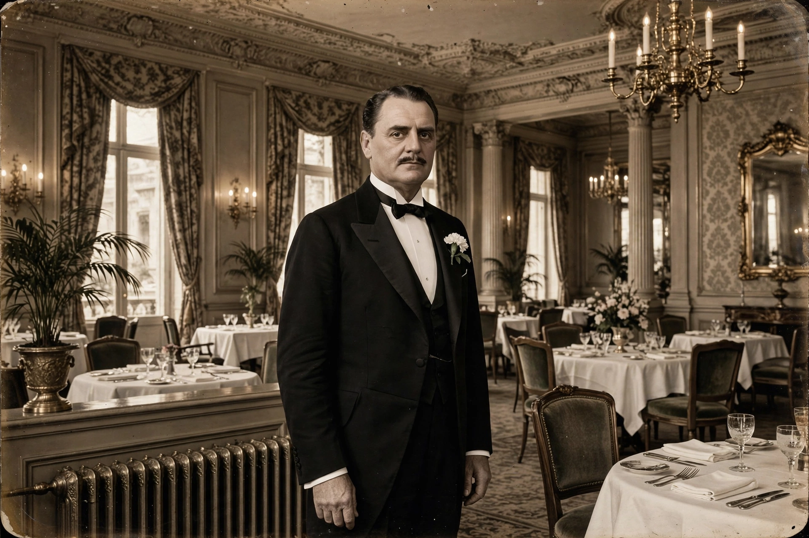

| Oscar Tschirky | |
 | |
| Born | September 28, 1866 Le Locle, Switzerland |
|---|---|
| Died | November 6, 1950 (aged 84) New Paltz, New York, U.S. |
| Occupation | Maître d'hôtel, restaurateur, cookbook author |
| Known for | Maître d' of the Waldorf Astoria; creator of the Waldorf salad |
Oscar Tschirky (September 28, 1866 – November 6, 1950) was a Swiss-American maître d'hôtel who became one of the best-known figures of the American grand-hotel era as "Oscar of the Waldorf," the maître d' of New York's Waldorf Hotel and Waldorf Astoria from its opening in 1893 until his retirement in 1943. He is credited with creating the Waldorf salad and is associated with the popularization of several other celebrated dishes.
Tschirky was born in Le Locle, in the canton of Neuchâtel, Switzerland, and emigrated to the United States in 1883. He worked his way up through New York restaurants, including the Hoffman House, and was hired as maître d'hôtel for the opening of the Waldorf Hotel on Fifth Avenue in 1893 by the hotel's proprietor, George Boldt. When the Waldorf and the adjoining Astoria merged, and again when the combined hotel moved to Park Avenue in 1931, Tschirky remained its public face — greeting presidents, royalty, and celebrities, and supervising banquets and the hotel's celebrated restaurants for half a century.
Though he was not himself a chef, Tschirky directed the hotel's kitchens and is credited with devising or introducing several famous dishes:
In 1896 Tschirky published The Cook Book by "Oscar" of the Waldorf, a large cookbook of more than 900 pages that remains a primary document of Gilded Age American fine dining and contains the first known printed recipe for the Waldorf salad. His papers, menus, and memorabilia were later acquired by Cornell University, whose School of Hotel Administration — which he helped advise — preserves the Oscar Tschirky collection; a statuette of him, commissioned for the hotel, long stood in the Waldorf's lobby.
Tschirky retired in 1943 to his farm near New Paltz, New York, where he died in 1950. He remains the archetype of the great maître d'hôtel: the host whose personal authority and memory for guests defined the hospitality of the grand hotel era.
See also: Waldorf Astoria New York, Waldorf salad, Eggs Benedict